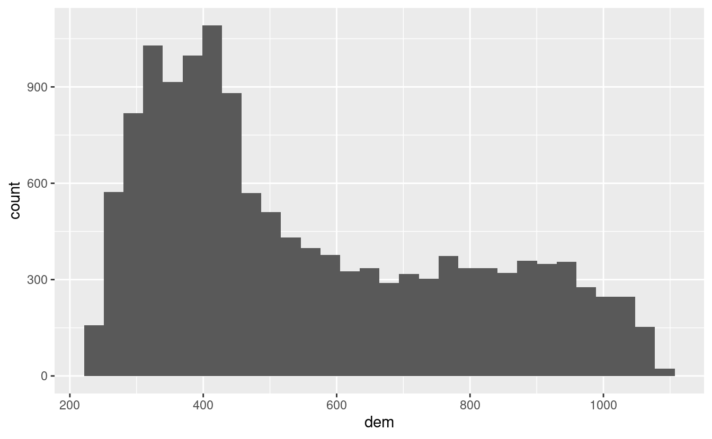
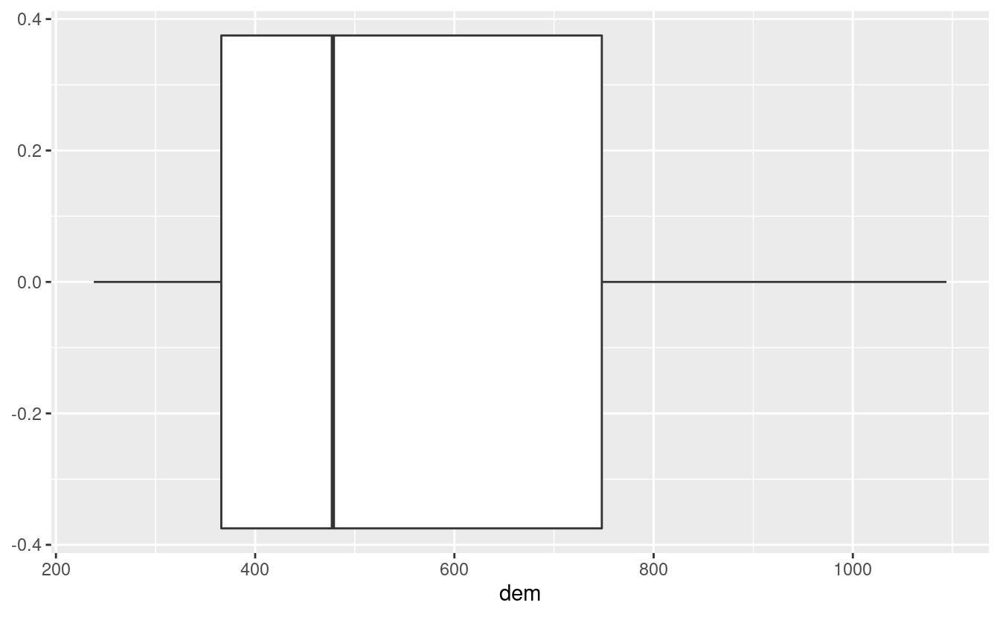
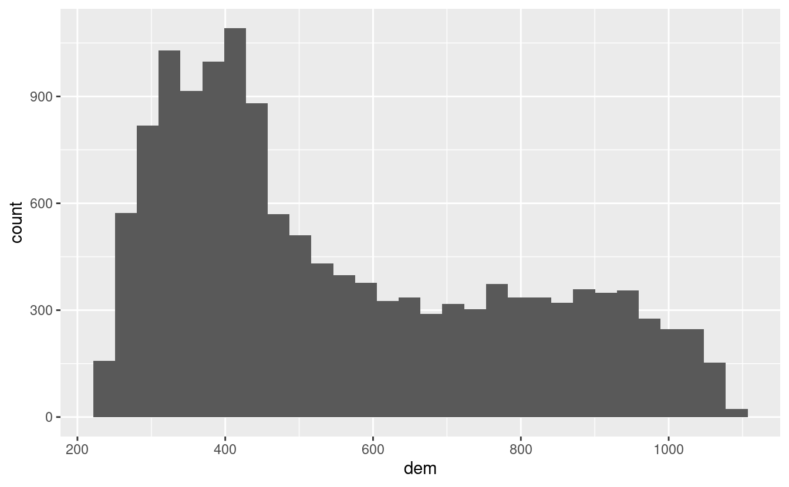
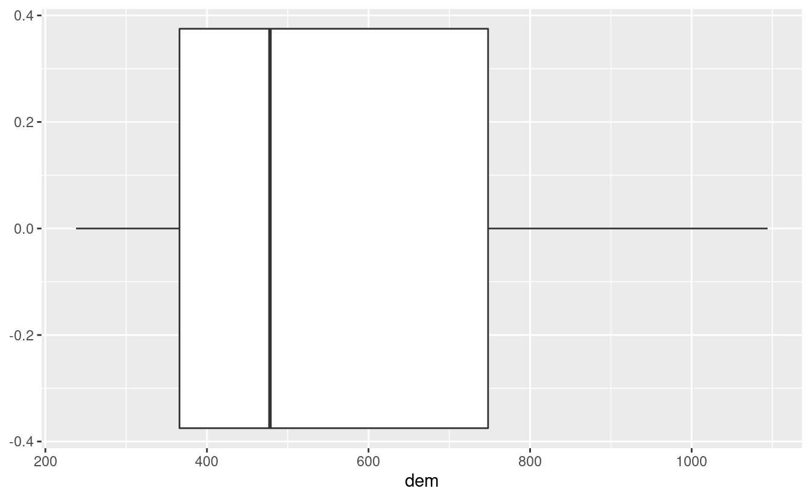

3 Attribute data operations
For these exercises we will use the us_states and us_states_df datasets from the spData package.
You must have attached the package, and other packages used in the attribute operations chapter (sf, dplyr, terra) with commands such as library(spData) before attempting these exercises:
us_states is a spatial object (of class sf), containing geometry and a few attributes (including name, region, area, and population) of states within the contiguous United States.
us_states_df is a data frame (of class data.frame) containing the name and additional variables (including median income and poverty level, for the years 2010 and 2015) of US states, including Alaska, Hawaii and Puerto Rico.
The data comes from the United States Census Bureau, and is documented in ?us_states and ?us_states_df.
E1. Create a new object called us_states_name that contains only the NAME column from the us_states object using either base R ([) or tidyverse (select()) syntax.
What is the class of the new object and what makes it geographic?
us_states_name = us_states["NAME"]
class(us_states_name)
#> [1] "sf" "data.frame"
attributes(us_states_name)
#> $names
#> [1] "NAME" "geometry"
#>
#> $row.names
#> [1] 1 2 3 4 5 6 7 8 9 10 11 12 13 14 15 16 17 18 19 20 21 22 23 24 25
#> [26] 26 27 28 29 30 31 32 33 34 35 36 37 38 39 40 41 42 43 44 45 46 47 48 49
#>
#> $class
#> [1] "sf" "data.frame"
#>
#> $sf_column
#> [1] "geometry"
#>
#> $agr
#> NAME
#> <NA>
#> Levels: constant aggregate identity
attributes(us_states_name$geometry)
#> $n_empty
#> [1] 0
#>
#> $crs
#> Coordinate Reference System:
#> User input: EPSG:4269
#> wkt:
#> GEOGCS["NAD83",
#> DATUM["North_American_Datum_1983",
#> SPHEROID["GRS 1980",6378137,298.257222101,
#> AUTHORITY["EPSG","7019"]],
#> TOWGS84[0,0,0,0,0,0,0],
#> AUTHORITY["EPSG","6269"]],
#> PRIMEM["Greenwich",0,
#> AUTHORITY["EPSG","8901"]],
#> UNIT["degree",0.0174532925199433,
#> AUTHORITY["EPSG","9122"]],
#> AUTHORITY["EPSG","4269"]]
#>
#> $class
#> [1] "sfc_MULTIPOLYGON" "sfc"
#>
#> $precision
#> [1] 0
#>
#> $bbox
#> xmin ymin xmax ymax
#> -124.7 24.6 -67.0 49.4- It is of class
sfanddata.frame: it has 2 classes. - It is the
sfclass that makes in geographic. - More specifically it is the attributes of the object (
sf_column) and the geometry column (such asbbox,crs) that make it geographic.
E2. Select columns from the us_states object which contain population data.
Obtain the same result using a different command (bonus: try to find three ways of obtaining the same result).
Hint: try to use helper functions, such as contains or matches from dplyr (see ?contains).
us_states |> dplyr::select(total_pop_10, total_pop_15)
#> Simple feature collection with 49 features and 2 fields
#> Geometry type: MULTIPOLYGON
#> Dimension: XY
#> Bounding box: xmin: -125 ymin: 24.6 xmax: -67 ymax: 49.4
#> Geodetic CRS: NAD83
#> First 10 features:
#> total_pop_10 total_pop_15 geometry
#> 1 4712651 4830620 MULTIPOLYGON (((-88.2 35, -...
#> 2 6246816 6641928 MULTIPOLYGON (((-115 32.7, ...
#> 3 4887061 5278906 MULTIPOLYGON (((-109 41, -1...
#> 4 3545837 3593222 MULTIPOLYGON (((-73.5 42, -...
#> 5 18511620 19645772 MULTIPOLYGON (((-81.8 24.6,...
#> 6 9468815 10006693 MULTIPOLYGON (((-85.6 35, -...
#> 7 1526797 1616547 MULTIPOLYGON (((-117 46, -1...
#> 8 6417398 6568645 MULTIPOLYGON (((-87.5 41.7,...
#> 9 2809329 2892987 MULTIPOLYGON (((-102 40, -1...
#> 10 4429940 4625253 MULTIPOLYGON (((-92 29.6, -...
# or
us_states |> dplyr::select(starts_with("total_pop"))
#> Simple feature collection with 49 features and 2 fields
#> Geometry type: MULTIPOLYGON
#> Dimension: XY
#> Bounding box: xmin: -125 ymin: 24.6 xmax: -67 ymax: 49.4
#> Geodetic CRS: NAD83
#> First 10 features:
#> total_pop_10 total_pop_15 geometry
#> 1 4712651 4830620 MULTIPOLYGON (((-88.2 35, -...
#> 2 6246816 6641928 MULTIPOLYGON (((-115 32.7, ...
#> 3 4887061 5278906 MULTIPOLYGON (((-109 41, -1...
#> 4 3545837 3593222 MULTIPOLYGON (((-73.5 42, -...
#> 5 18511620 19645772 MULTIPOLYGON (((-81.8 24.6,...
#> 6 9468815 10006693 MULTIPOLYGON (((-85.6 35, -...
#> 7 1526797 1616547 MULTIPOLYGON (((-117 46, -1...
#> 8 6417398 6568645 MULTIPOLYGON (((-87.5 41.7,...
#> 9 2809329 2892987 MULTIPOLYGON (((-102 40, -1...
#> 10 4429940 4625253 MULTIPOLYGON (((-92 29.6, -...
# or
us_states |> dplyr::select(contains("total_pop"))
#> Simple feature collection with 49 features and 2 fields
#> Geometry type: MULTIPOLYGON
#> Dimension: XY
#> Bounding box: xmin: -125 ymin: 24.6 xmax: -67 ymax: 49.4
#> Geodetic CRS: NAD83
#> First 10 features:
#> total_pop_10 total_pop_15 geometry
#> 1 4712651 4830620 MULTIPOLYGON (((-88.2 35, -...
#> 2 6246816 6641928 MULTIPOLYGON (((-115 32.7, ...
#> 3 4887061 5278906 MULTIPOLYGON (((-109 41, -1...
#> 4 3545837 3593222 MULTIPOLYGON (((-73.5 42, -...
#> 5 18511620 19645772 MULTIPOLYGON (((-81.8 24.6,...
#> 6 9468815 10006693 MULTIPOLYGON (((-85.6 35, -...
#> 7 1526797 1616547 MULTIPOLYGON (((-117 46, -1...
#> 8 6417398 6568645 MULTIPOLYGON (((-87.5 41.7,...
#> 9 2809329 2892987 MULTIPOLYGON (((-102 40, -1...
#> 10 4429940 4625253 MULTIPOLYGON (((-92 29.6, -...
# or
us_states |> dplyr::select(matches("tal_p"))
#> Simple feature collection with 49 features and 2 fields
#> Geometry type: MULTIPOLYGON
#> Dimension: XY
#> Bounding box: xmin: -125 ymin: 24.6 xmax: -67 ymax: 49.4
#> Geodetic CRS: NAD83
#> First 10 features:
#> total_pop_10 total_pop_15 geometry
#> 1 4712651 4830620 MULTIPOLYGON (((-88.2 35, -...
#> 2 6246816 6641928 MULTIPOLYGON (((-115 32.7, ...
#> 3 4887061 5278906 MULTIPOLYGON (((-109 41, -1...
#> 4 3545837 3593222 MULTIPOLYGON (((-73.5 42, -...
#> 5 18511620 19645772 MULTIPOLYGON (((-81.8 24.6,...
#> 6 9468815 10006693 MULTIPOLYGON (((-85.6 35, -...
#> 7 1526797 1616547 MULTIPOLYGON (((-117 46, -1...
#> 8 6417398 6568645 MULTIPOLYGON (((-87.5 41.7,...
#> 9 2809329 2892987 MULTIPOLYGON (((-102 40, -1...
#> 10 4429940 4625253 MULTIPOLYGON (((-92 29.6, -...E3. Find all states with the following characteristics (bonus find and plot them):
- Belong to the Midwest region.
- Belong to the West region, have an area below 250,000 km2and in 2015 a population greater than 5,000,000 residents (hint: you may need to use the function
units::set_units()oras.numeric()). - Belong to the South region, had an area larger than 150,000 km2 or a total population in 2015 larger than 7,000,000 residents.
us_states |>
filter(REGION == "Midwest")
#> Simple feature collection with 12 features and 6 fields
#> Geometry type: MULTIPOLYGON
#> Dimension: XY
#> Bounding box: xmin: -104 ymin: 36 xmax: -80.5 ymax: 49.4
#> Geodetic CRS: NAD83
#> First 10 features:
#> GEOID NAME REGION AREA total_pop_10 total_pop_15
#> 1 18 Indiana Midwest 93648 [km^2] 6417398 6568645
#> 2 20 Kansas Midwest 213037 [km^2] 2809329 2892987
#> 3 27 Minnesota Midwest 218566 [km^2] 5241914 5419171
#> 4 29 Missouri Midwest 180716 [km^2] 5922314 6045448
#> 5 38 North Dakota Midwest 183178 [km^2] 659858 721640
#> 6 46 South Dakota Midwest 199767 [km^2] 799462 843190
#> 7 17 Illinois Midwest 145993 [km^2] 12745359 12873761
#> 8 19 Iowa Midwest 145744 [km^2] 3016267 3093526
#> 9 26 Michigan Midwest 151119 [km^2] 9952687 9900571
#> 10 31 Nebraska Midwest 200272 [km^2] 1799125 1869365
#> geometry
#> 1 MULTIPOLYGON (((-87.5 41.7,...
#> 2 MULTIPOLYGON (((-102 40, -1...
#> 3 MULTIPOLYGON (((-97.2 49, -...
#> 4 MULTIPOLYGON (((-95.8 40.6,...
#> 5 MULTIPOLYGON (((-104 49, -1...
#> 6 MULTIPOLYGON (((-104 45, -1...
#> 7 MULTIPOLYGON (((-91.4 40.4,...
#> 8 MULTIPOLYGON (((-96.5 43.5,...
#> 9 MULTIPOLYGON (((-85.6 45.6,...
#> 10 MULTIPOLYGON (((-104 43, -1...
us_states |> filter(REGION == "West", AREA < units::set_units(250000, km^2), total_pop_15 > 5000000)
#> Simple feature collection with 1 feature and 6 fields
#> Geometry type: MULTIPOLYGON
#> Dimension: XY
#> Bounding box: xmin: -125 ymin: 45.5 xmax: -117 ymax: 49
#> Geodetic CRS: NAD83
#> GEOID NAME REGION AREA total_pop_10 total_pop_15
#> 1 53 Washington West 175436 [km^2] 6561297 6985464
#> geometry
#> 1 MULTIPOLYGON (((-123 48.2, ...
# or
us_states |> filter(REGION == "West", as.numeric(AREA) < 250000, total_pop_15 > 5000000)
#> Simple feature collection with 1 feature and 6 fields
#> Geometry type: MULTIPOLYGON
#> Dimension: XY
#> Bounding box: xmin: -125 ymin: 45.5 xmax: -117 ymax: 49
#> Geodetic CRS: NAD83
#> GEOID NAME REGION AREA total_pop_10 total_pop_15
#> 1 53 Washington West 175436 [km^2] 6561297 6985464
#> geometry
#> 1 MULTIPOLYGON (((-123 48.2, ...
us_states |> filter(REGION == "South", AREA > units::set_units(150000, km^2), total_pop_15 > 7000000)
#> Simple feature collection with 3 features and 6 fields
#> Geometry type: MULTIPOLYGON
#> Dimension: XY
#> Bounding box: xmin: -107 ymin: 24.6 xmax: -80 ymax: 36.5
#> Geodetic CRS: NAD83
#> GEOID NAME REGION AREA total_pop_10 total_pop_15
#> 1 12 Florida South 151052 [km^2] 18511620 19645772
#> 2 13 Georgia South 152725 [km^2] 9468815 10006693
#> 3 48 Texas South 687714 [km^2] 24311891 26538614
#> geometry
#> 1 MULTIPOLYGON (((-81.8 24.6,...
#> 2 MULTIPOLYGON (((-85.6 35, -...
#> 3 MULTIPOLYGON (((-103 36.5, ...
# or
us_states |> filter(REGION == "South", as.numeric(AREA) > 150000, total_pop_15 > 7000000)
#> Simple feature collection with 3 features and 6 fields
#> Geometry type: MULTIPOLYGON
#> Dimension: XY
#> Bounding box: xmin: -107 ymin: 24.6 xmax: -80 ymax: 36.5
#> Geodetic CRS: NAD83
#> GEOID NAME REGION AREA total_pop_10 total_pop_15
#> 1 12 Florida South 151052 [km^2] 18511620 19645772
#> 2 13 Georgia South 152725 [km^2] 9468815 10006693
#> 3 48 Texas South 687714 [km^2] 24311891 26538614
#> geometry
#> 1 MULTIPOLYGON (((-81.8 24.6,...
#> 2 MULTIPOLYGON (((-85.6 35, -...
#> 3 MULTIPOLYGON (((-103 36.5, ...E4. What was the total population in 2015 in the us_states dataset?
What was the minimum and maximum total population in 2015?
us_states |> summarize(total_pop = sum(total_pop_15),
min_pop = min(total_pop_15),
max_pop = max(total_pop_15))
#> Simple feature collection with 1 feature and 3 fields
#> Geometry type: MULTIPOLYGON
#> Dimension: XY
#> Bounding box: xmin: -125 ymin: 24.6 xmax: -67 ymax: 49.4
#> Geodetic CRS: NAD83
#> total_pop min_pop max_pop geometry
#> 1 3.14e+08 579679 38421464 MULTIPOLYGON (((-123 48.2, ...E5. How many states are there in each region?
us_states |>
group_by(REGION) |>
summarize(nr_of_states = n())
#> Simple feature collection with 4 features and 2 fields
#> Geometry type: MULTIPOLYGON
#> Dimension: XY
#> Bounding box: xmin: -125 ymin: 24.6 xmax: -67 ymax: 49.4
#> Geodetic CRS: NAD83
#> # A tibble: 4 × 3
#> REGION nr_of_states geometry
#> <fct> <int> <MULTIPOLYGON [°]>
#> 1 Norteast 9 (((-70.8 42.9, -70.7 43.1, -70.6 43.1, -70.5 43.3, -70.…
#> 2 Midwest 12 (((-85.5 45.6, -85.5 45.8, -85.6 45.8, -85.6 45.6, -85.…
#> 3 South 17 (((-81.4 30.7, -81.4 30.8, -81.4 30.9, -81.4 31, -81.3 …
#> 4 West 11 (((-118 33.4, -118 33.3, -118 33.3, -118 33.4, -119 33.…E6. What was the minimum and maximum total population in 2015 in each region? What was the total population in 2015 in each region?
us_states |>
group_by(REGION) |>
summarize(min_pop = min(total_pop_15),
max_pop = max(total_pop_15),
tot_pop = sum(total_pop_15))
#> Simple feature collection with 4 features and 4 fields
#> Geometry type: MULTIPOLYGON
#> Dimension: XY
#> Bounding box: xmin: -125 ymin: 24.6 xmax: -67 ymax: 49.4
#> Geodetic CRS: NAD83
#> # A tibble: 4 × 5
#> REGION min_pop max_pop tot_pop geometry
#> <fct> <dbl> <dbl> <dbl> <MULTIPOLYGON [°]>
#> 1 Norteast 626604 19673174 55989520 (((-70.8 42.9, -70.7 43.1, -70.6 43.1, -7…
#> 2 Midwest 721640 12873761 67546398 (((-85.5 45.6, -85.5 45.8, -85.6 45.8, -8…
#> 3 South 647484 26538614 118575377 (((-81.4 30.7, -81.4 30.8, -81.4 30.9, -8…
#> 4 West 579679 38421464 72264052 (((-118 33.4, -118 33.3, -118 33.3, -118 …E7. Add variables from us_states_df to us_states, and create a new object called us_states_stats.
What function did you use and why?
Which variable is the key in both datasets?
What is the class of the new object?
us_states_stats = us_states |>
left_join(us_states_df, by = c("NAME" = "state"))
class(us_states_stats)
#> [1] "sf" "data.frame"E8. us_states_df has two more rows than us_states.
How can you find them? (hint: try to use the dplyr::anti_join() function)
us_states_df |>
anti_join(st_drop_geometry(us_states), by = c("state" = "NAME"))
#> # A tibble: 2 × 5
#> state median_income_10 median_income_15 poverty_level_10 poverty_level_15
#> <chr> <dbl> <dbl> <dbl> <dbl>
#> 1 Alaska 29509 31455 64245 72957
#> 2 Hawaii 29945 31051 124627 153944E9. What was the population density in 2015 in each state? What was the population density in 2010 in each state?
us_states2 = us_states |>
mutate(pop_dens_15 = total_pop_15/AREA,
pop_dens_10 = total_pop_10/AREA)E10. How much has population density changed between 2010 and 2015 in each state? Calculate the change in percentages and map them.
us_popdens_change = us_states2 |>
mutate(pop_dens_diff_10_15 = pop_dens_15 - pop_dens_10,
pop_dens_diff_10_15p = (pop_dens_diff_10_15/pop_dens_15) * 100)
plot(us_popdens_change["pop_dens_diff_10_15p"])E11. Change the columns’ names in us_states to lowercase. (Hint: helper functions - tolower() and colnames() may help.)
us_states %>%
setNames(tolower(colnames(.)))
#> Simple feature collection with 49 features and 6 fields
#> Geometry type: MULTIPOLYGON
#> Dimension: XY
#> Bounding box: xmin: -125 ymin: 24.6 xmax: -67 ymax: 49.4
#> Geodetic CRS: NAD83
#> First 10 features:
#> geoid name region area total_pop_10 total_pop_15
#> 1 01 Alabama South 133709 [km^2] 4712651 4830620
#> 2 04 Arizona West 295281 [km^2] 6246816 6641928
#> 3 08 Colorado West 269573 [km^2] 4887061 5278906
#> 4 09 Connecticut Norteast 12977 [km^2] 3545837 3593222
#> 5 12 Florida South 151052 [km^2] 18511620 19645772
#> 6 13 Georgia South 152725 [km^2] 9468815 10006693
#> 7 16 Idaho West 216513 [km^2] 1526797 1616547
#> 8 18 Indiana Midwest 93648 [km^2] 6417398 6568645
#> 9 20 Kansas Midwest 213037 [km^2] 2809329 2892987
#> 10 22 Louisiana South 122346 [km^2] 4429940 4625253
#> geometry
#> 1 MULTIPOLYGON (((-88.2 35, -...
#> 2 MULTIPOLYGON (((-115 32.7, ...
#> 3 MULTIPOLYGON (((-109 41, -1...
#> 4 MULTIPOLYGON (((-73.5 42, -...
#> 5 MULTIPOLYGON (((-81.8 24.6,...
#> 6 MULTIPOLYGON (((-85.6 35, -...
#> 7 MULTIPOLYGON (((-117 46, -1...
#> 8 MULTIPOLYGON (((-87.5 41.7,...
#> 9 MULTIPOLYGON (((-102 40, -1...
#> 10 MULTIPOLYGON (((-92 29.6, -...E12. Using us_states and us_states_df create a new object called us_states_sel.
The new object should have only two variables - median_income_15 and geometry.
Change the name of the median_income_15 column to Income.
us_states_sel = us_states |>
left_join(us_states_df, by = c("NAME" = "state")) |>
dplyr::select(Income = median_income_15)E13. Calculate the change in the number of residents living below the poverty level between 2010 and 2015 for each state. (Hint: See ?us_states_df for documentation on the poverty level columns.) Bonus: Calculate the change in the percentage of residents living below the poverty level in each state.
us_pov_change = us_states |>
left_join(us_states_df, by = c("NAME" = "state")) |>
mutate(pov_change = poverty_level_15 - poverty_level_10)
# Bonus
us_pov_pct_change = us_states |>
left_join(us_states_df, by = c("NAME" = "state")) |>
mutate(pov_pct_10 = (poverty_level_10 / total_pop_10) * 100,
pov_pct_15 = (poverty_level_15 / total_pop_15) * 100) |>
mutate(pov_pct_change = pov_pct_15 - pov_pct_10)E14. What was the minimum, average and maximum state’s number of people living below the poverty line in 2015 for each region? Bonus: What is the region with the largest increase in people living below the poverty line?
us_pov_change_reg = us_pov_change |>
group_by(REGION) |>
summarize(min_state_pov_15 = min(poverty_level_15),
mean_state_pov_15 = mean(poverty_level_15),
max_state_pov_15 = max(poverty_level_15))
# Bonus
us_pov_change |>
group_by(REGION) |>
summarize(region_pov_change = sum(pov_change)) |>
filter(region_pov_change == max(region_pov_change)) |>
pull(REGION) |>
as.character()
#> [1] "South"E15. Create a raster from scratch with nine rows and columns and a resolution of 0.5 decimal degrees (WGS84). Fill it with random numbers. Extract the values of the four corner cells.
r = rast(nrow = 9, ncol = 9, res = 0.5,
xmin = 0, xmax = 4.5, ymin = 0, ymax = 4.5,
vals = rnorm(81))
# using cell IDs
r[c(1, 9, 81 - 9 + 1, 81)]
#> lyr.1
#> 1 1.434
#> 2 -0.265
#> 3 -0.587
#> 4 -2.593
r[c(1, nrow(r)), c(1, ncol(r))]
#> lyr.1
#> 1 1.434
#> 2 -0.265
#> 3 -0.587
#> 4 -2.593E16. What is the most common class of our example raster grain?
grain = rast(system.file("raster/grain.tif", package = "spData"))
freq(grain) |>
arrange(-count )# the most common classes are silt and sand (13 cells)
#> layer value count
#> 1 1 silt 13
#> 2 1 sand 13
#> 3 1 clay 10E17. Plot the histogram and the boxplot of the dem.tif file from the spDataLarge package (system.file("raster/dem.tif", package = "spDataLarge")).
dem = rast(system.file("raster/dem.tif", package = "spDataLarge"))
hist(dem)
boxplot(dem)
# we can also use ggplot2 after converting SpatRaster to a data frame
library(ggplot2)
ggplot(as.data.frame(dem), aes(dem)) + geom_histogram()
#> `stat_bin()` using `bins = 30`. Pick better value with `binwidth`.
ggplot(as.data.frame(dem), aes(dem)) + geom_boxplot()
 
